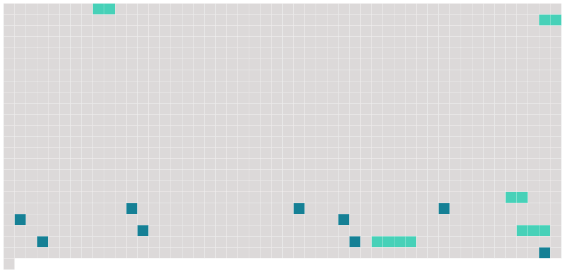

Longueur nb maillons : 14 mentions |
 |
L'Isabelle, donna Sérafina, et même [la soubrette] , lui troublaient doucement l'imagination et lui faisaient l'effet plutôt de divinités descendues sur la terre que de simples mortelles. [3 phrases] Isabelle prit place à gauche, [la soubrette] se mit en face, la duègne s'établit à côté du Pédant, Léandre et le Matamore s'assirent où ils voulurent. [15 phrases] [La soubrette] méritait en plein l'épithète de morena que les Espagnols donnent aux brunes. [Sa] peau se colorait de tons dorés et fauves comme celle d'une gitana. [Ses] cheveux drus et crespelés étaient d'un noir d'enfer, et [ses] prunelles d'un brun jaune petillaient d'une malice diabolique. [Sa] bouche, grande et d'un rouge vif, laissait luire par éclairs blancs une denture qui eût fait honneur à un jeune loup. Du reste, [elle] était maigre et comme consumée d'ardeur et d'esprit, mais de cette maigreur jeune et bien portante qui ne fait point mal à voir. À coup sûr, [elle] devait être aussi experte à recevoir et à remettre un poulet à la ville qu'au théâtre ; mais elle devait bien compter sur ses charmes, la dame qui se servait d' [une pareille Dariolette] !! En passant par [ses] mains, plus d'une déclaration d'amour n'était pas arrivée à son adresse, et le galant oublieux s'était attardé dans l'antichambre. [C'] était [une de ces femmes] que leurs compagnes trouvent laides, mais qui sont irrésistibles pour les hommes et semblent pétries avec du sel, du piment et des cantharides, ce qui ne les empêche pas d'être froides comme des usuriers lorsqu'il s'agit de leurs intérêts.
Un costume fantasque, bleu et jaune avec un bavolet de fausse dentelle, composait [sa] toilette. |
 |
La ressource peut être téléchargée sur la page Ortolang
Si vous avez des questions ou vous voyez des erreurs, merci d'envoyer un mail à silvia.federzoni89@gmail.com
Site développé par S. Federzoni (contact)